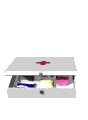

Nous nous sommes beaucoup aidés de sites internet très bien fait tels que :
 le site du chu de Rouen qui informe bien sur les zones à risque du paludisme et propose de bonnes trousses à pharmacie.
le site du chu de Rouen qui informe bien sur les zones à risque du paludisme et propose de bonnes trousses à pharmacie.
 le site du SMI (Service Médical International) qui fournit des conseils intéressants et propose à la vente des articles très fiables et utiles pour le bon déroulement du voyage.
le site du SMI (Service Médical International) qui fournit des conseils intéressants et propose à la vente des articles très fiables et utiles pour le bon déroulement du voyage.
 le site de Santé Voyage qui est très riche en informations pour les voyageurs.
le site de Santé Voyage qui est très riche en informations pour les voyageurs.
 le site du Comité d’Informations Médicales qui donne d’excellentes informations sur la santé pour les voyageurs et expatriés selon le pays étranger à traverser.
le site du Comité d’Informations Médicales qui donne d’excellentes informations sur la santé pour les voyageurs et expatriés selon le pays étranger à traverser.
Attestation de Formation aux Premiers Secours (A.F.P.S.)
Nous avons décidé d’effectuer la formation aux premiers secours avant de partir. Nous pensons que ça peut être utile pendant le voyage afin de pouvoir gérer des éventuelles situations d’accident. La formation se passe sur un week-end et coûte 60 €. Ce serait bête de s’en passer !
Vaccinations

Nous avons consulté :
L’Institut Pasteur
211 rue de Vaugirard 75015 PARIS
01.40.61.38.00
01.40.61.38.43 pour les consultations "Conseils aux voyageurs"
http://www.pasteur.fr/sante/cmed/cs...
 consultation en médecine du voyage pour établir le traitement antipaludique
consultation en médecine du voyage pour établir le traitement antipaludique
 vaccins : fièvre jaune
vaccins : fièvre jaune
L’hôpital Bichat
Service de Maladies infectieuses et tropicales
46, rue Henri Huchard 75018 Paris
01 40 25 88 92 pour les consultations "Conseils aux voyageurs" et les vaccinations
http://www.infectiologie.com/public...
 consultation en médecine du voyage
consultation en médecine du voyage
 vaccins : rage
vaccins : rage
Nous avons pris deux rendez-vous (un à l’Institut Pasteur et l’autre à l’hôpital Bichat) pour avoir une consultation en médecine pour notre voyage. Le médecin de l’Institut Pasteur nous a gardés une heure et nous a tout expliqué de façon très précise. Il nous a établi pour chacun une ordonnance de médicaments à emmener pour soigner tous les petits maux du voyage. Il est indispensable de partir avec une bonne trousse.
| VACCINS | INDICATIONS | MODALITES | Michaël | Eve-Laure | PRIX |
|---|---|---|---|---|---|
| Fièvre Jaune | Zone intertropicale d’Afrique et d’Amérique du Sud | 1 injection 10 jours avant le départ au minimum. Rappel tous les 10 ans. | Oui | Non. Déjà fait. | 32 € |
| Hépatite A et Hépatite B | Séjour dans un pays en voie de développement | 2 injections à 1 mois d’intervalle. Rappel de 6 mois à un an plus tard. protection après > à 10 ans. | Oui | Hépatite A : 1 injection (rappel de l’après 6 mois). | 2x60 € + 40 € |
| Typhoïde | Voyage dans des conditions d’hygiène précaires (surtout Inde) | 1 injection 15 jours avant le départ minimum. Rappel tous les 3 ans | Oui | Déjà fait mais plus valable. A été obligée de le refaire. | 2 x 27,50 € |
| Rage | Séjours en situation isolée principalement en Asie | 3 injection J0,J7, J28 et rappel un an plus tard. Attention, la vaccination ne dispense pas d’un traitement curatif en cas de morsure. | Oui | Oui | 2 x 3 x 40 € = 240 € |
| DT Polio + Diphtérie + Tétanos | Monde entier | 1 rappel tous les 10 ans | Oui | Non. A jour. | 12,50 € |
| TOTAL | 499,50 € |
Nous n’avons pas eu besoin de faire le vaccin conte l’encéphalite japonaise, utile pour les séjours prolongés dans les zones rurales d’Asie mais uniquement en période de mousson.
Paludisme
Pour le traitement anti-paludéen, on nous a conseillé le DoxyPalu étant donné que nous traversons plusieurs zones à risque pendant notre voyage et que le traitement contre le parasite n’est pas le même en Asie et au Brésil par exemple. Le DoxyPalu est un traitement à large spectre qui permet d’être protégé partout, mais il a un effet secondaire ennuyeux, il est photosensible...
Après réflexion, nous partirons sans prendre de traitement préventif pour plusieurs raisons :
 Tout d’abord, les traitements prescrits sont lourds et possèdent généralement des effets secondaires importants.
Tout d’abord, les traitements prescrits sont lourds et possèdent généralement des effets secondaires importants.
 La prise de ce traitement préventif n’est pas toujours efficace, peut ’’masquer’’ les symptomes d’une crise plus grave.
La prise de ce traitement préventif n’est pas toujours efficace, peut ’’masquer’’ les symptomes d’une crise plus grave.
 Les traitement sont très chers et non remboursés par la Sécu
Les traitement sont très chers et non remboursés par la Sécu
 La prise de ces médicaments accélère aussi la résistance du parasite, rendant de plus en plus inefficace tout traitement préventif.
La prise de ces médicaments accélère aussi la résistance du parasite, rendant de plus en plus inefficace tout traitement préventif.
Après, libre à vous de choisir s’il faut prendre un traitement ou non...
Nous allons nous protégér en :
 portant des vêtements qui couvrent bras et jambes, et qui sont traités au Permethrine,
portant des vêtements qui couvrent bras et jambes, et qui sont traités au Permethrine,
 mettant un répulsif efficace sur la peau directement exposée,
mettant un répulsif efficace sur la peau directement exposée,
 utilisant un insecticide dans notre chambre (serpentin, diffuseur ou autre)
utilisant un insecticide dans notre chambre (serpentin, diffuseur ou autre)
 dormant sous une moustiquaire imprégnée si possible. Les moustiques n’aiment pas beaucoup la climatisation et les courants d’air des ventilateurs.
dormant sous une moustiquaire imprégnée si possible. Les moustiques n’aiment pas beaucoup la climatisation et les courants d’air des ventilateurs.
Nous allons tout de même prendre un traitement de réserve à la Malarone au cas où l’un de nous aurait les symptômes du paludisme et que nous ne puissions pas consulter de médecin sur place facilement et rapidement.
La trousse à pharmacie

Trousse homéopathique
| Remède | Indications | Prix | Utile après coup ? |
|---|---|---|---|
| Solution Bellis Perenis ... | Désinfectant, plaies, coupures, infections cutanées ... | 20,69 | Pas pris finalement |
| 3 x Arnica Montana | Traumatismes | 5,43 | Oui, pour l’entorse d’Eve-Laure |
| 3 x Apis, 3 x Urtica Urens | Piqûres d’instectes, éruptions cutanées, allergies solaires, œdèmes de la face | 10.86 | Non |
| 3 x Poumon histamine | Allergies | 5,43 | Non |
| 3 x Coca, 3 x Argentum Nitricum | Mal et vertiges des hauteurs | 10,86 | Oui, mais pas sûre de l’efficacité, la Coca c’est mieux ! |
| 3 x Aloe composé | Dérangements intestinaux | 5,43 | Non |
| 3 x Nux vomica composé | Contispation, douleurs abdominales, douleurs d’estomac | 5,43 | Non |
| 3 x Tabacum composé | Nausées, mal des transports, sensation de vertiges | 5,43 | Non |
| 3 x Alium Cepa composé | Rhumes, rhino-pharyngites | 5,43 | Non |
| 3 x Cuprum Metallicum | Crampes, douleurs abdominales, spasmes, diarrhées légères et aiguës | 5,43 | Non |
| 3 x China, 3 x Veratrum Album | Diarrhées aiguës | 10,86 | Non |
| TOTAL | 91,28 € |
Trousse allopathique
| Remède | Indications | Prix | Utile après coup ? |
|---|---|---|---|
| Varnoline | Pilules contraceptives | 101,36 | Oui |
| Malarone | Traitement anti-paludéen curatif | 76 | Non |
| Malarone | Traitement anti-paludéen préventif | 76 | Non |
| Compresses stériles | Plaies | 1,21 | Oui, pour l’ongle incarné de Michaël |
| Bandes de gaze | Bandages | 6,21 | Oui, pour l’entorse d’Eve-Laure |
| Elastoplast | Pansements | Oui, pour l’entorse d’Eve-Laure | |
| Pansements Compeed | Seconde peau | 3 | Non |
| Sparaplaie | Pansements antiseptiques | 1,62 | Non |
| Sparadrap | Ampoules, plaies | Oui, mais on en trouve partout | |
| Boule quiès | Sommeil plus calme | Oui | |
| HydroClonazone | Désinfecter l’eau de boisson | Oui, moins polluant que d’acheter des bouteilles d’eau en plastique ! | |
| Betadine | Antiseptique - Désinfectant à base d’iode | Oh que oui ! | |
| 2 x Gel Antiseptique | Gel anti bactérien pour mains | Un peu | |
| 2 x Spasfon | Antispasmodique | 3,65 | Non |
| Spasfon Lyoc | Douleur abdomidale : 1 à 2 comprimés sous la langue 1 à 3 / jour - max 6 jours | 1,57 | Oui |
| Activir | Pommade pour l’herpès | l’a déjà | Oui, un bouton de fièvre pour Eve-Laure |
| Diprosone | Pommade pour excéma | l’a déjà | Non |
| Zyrtex | Allergie cutanée, yeux, œdème, rhume allergique : 1/jour le soir jusqu’à 5 à 6 jours | 4,65 | Non |
| 2 x Noroxine 400 | Antibiotique - Infections urinaires : 1 comprimé matin et soir au repas pendant 5 jours - Attention au soleil et si douleur au tendon arrêter immédiatement | 5,76 | Non |
| Smecta | Diarrhée simple - Mal de ventre - Protection de gastroentérite : 1 sachet 3 fois/jour ( à l’écart des autres médicaments pendant 2 à 4h) Si insuffisant 6/jour | 3,26 | Oui, surtout en Inde ! |
| 3 x Tiorfan | Diarrhée (si pas d’amélioration avec 48h Smecta) : 1 gélule 3 fois/jour avant le repas jusqu’à 5 jours | 19,71 | Non |
| Motilium gélules | Nausée et vomissement : 1 à 2 comprimés 15 à 30 min avant le repas 3 fois/jour | 3,28 | Oui, mais on en trouve partout |
| Motilyo | Nausée et vomissement | 3 | Oui |
| 2 x Paracétamol | Douleur et fièvre | 1,05 | Oui, mais on en trouve partout |
| Doliprane | Douleur et fièvre | 0,68 | Oui, mais on en trouve partout |
| gel Ketum | Douleur articulaire | 2,79 | Oui, pour l’entorse d’Eve-Laure, mais on en trouve partout |
| 3 x Dacrine | Collyre | 17,7 | Non |
| Biafine petits modèles | Pommade pour brûlures | 2,73 | Non |
| Steristrip | Plaies ouvertes | 2,6 | Non |
| Efferalgan (pas d’effervescent) | Douleur et fièvre | Oui, mais on en trouve partout | |
| RhinAdvil | Rhume : 1 comprimé 3 fois/jour jusqu’à 3 à jours en mangeant - à l’écart de tout antibiotique | Pas pris finalement | |
| 2 x Augmentin | Antibiotique large spectre pour tous types d’infections : Si infection légère (peu de fièvre < 48h) : 1 comprimé 3 fois/jour au repas pendant 6 à 8 jours. Si infection plus grave : 2 comprimés 3 fois / jour au repas pendant 6 jours. | 8,52 | Oui pour une grippe au Pérou, mais pas sûre que de son efficacité |
| Soulager les piqûres | 5,5 | Oui, mais n’a jamais marché | |
| 2 x Spray Insect Ecran Tissu | Répulsif à moustiques | 21 | Non, nous n’avons pas ré-imprégné la moustiquaire |
| 2 x Spray Insect Ecran Vêtements | Répulsif à moustiques | 17 | Pas vraiment |
| 4 x Spray Insect Ecran Peau | Répulsif à moustiques | 40,5 | Oui |
| TOTAL | 430,35 € |